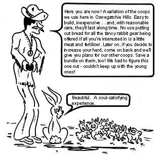
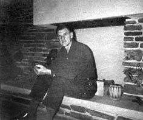
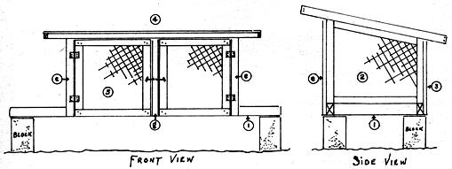
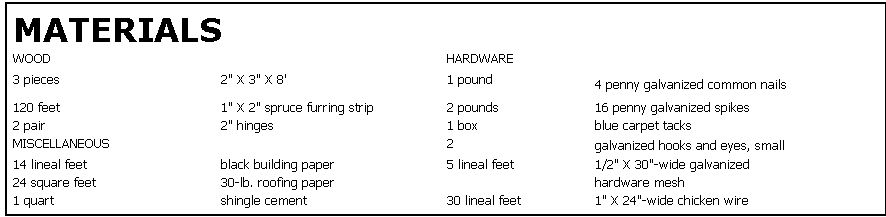
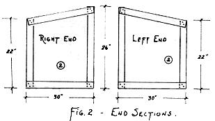
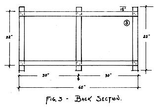
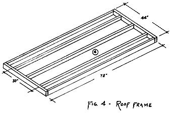
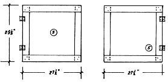
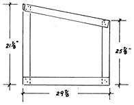

James N. Peterson has spent over five decades rambling the globe in search of the Good and the Beautiful. His restless quest-through hobo jungles of the big Depression to plush, catered clubs in South Africa, from sweeping floors in a mill to pacing the bridge of a luxurious passenger ship-has finally brought him full circle to his starting point: A family, small farm, the woods and the soil. Along the way, Jim has picked up a wealth of practical experience and a warm, comfortable view of life.
"The bounty only ceases when you fail to acquire the knowledge necessary to reap the harvest," he says. "I figure many problems in alternative living, communes or homesteads are about the same any place you go. And-whether it's the mountains of Colorado, the woods of Minnesota or the Hills of Oswegatchie right here in Connecticut-you'll most generally find an ole-timer who's already solved those problems.
"A good many of today's young folks are looking for an alternative to the rat race and I don't blame them. I just wonder if they realize that a number of us older geezers have been living such alternatives for years. Trading the so-called security of the establishment for the freedom of a simpler life, we've lived on the perimeter and made our own Good Life from the things provided by the Good Earth.
"In our case, my lady and I cut a spread out of rocky, bushy, wooded hills so dense even the copperheads had to use what was left of the old wood trail to pass through. We had to go the organic gardening route to have any plant life other than bullbriers or scrub blueberries on the land, as it is truly worn out. Along with the soil and reforesting bit, the husbandry of animals is in progress and our hillside is slowly being covered with small coops and sheds, each an experiment in limited costs and maximum serviceability.
"One of our most satisfying projects has been the raising of rabbits. This economical endeavor produces both high protein food and exceptionally rich garden fertilizer (rabbit manure outstrips poultry, horse and cow manure in nitrogen and phosphate content and matches horse manure in potash values) and has been too long overlooked by most folks.
"Even a small-scale rabbit venture pays solid returns but fancy breeds, fancy coops and fancy feed won't teach you any more than trying the same thing with a buck and a doe from the guy down the road.
"A couple of the inexpensive coops shown in this article should house your first rabbits just fine: The animals were successfully raised in far less substantial quarters long before this antibiotic age. With a little common sense and a little loving daily care anyone can raise the pesky critters. Just keep them clean and forget the Easter bunny bit. Ask the guy down the road what he fed them and follow suit."
Here is an inexpensive coop with which you can gain maximum results from rabbits. Constructed basically of 1 x 2 furring strips, 1"-mesh chicken wire and tar paper, the coop is light enough to be moved from area to area before and after the growing season and out of the prevailing winds to a sheltered spot during the blustery winter months. For further protection, either black building paper or cardboard can be tacked to the sides and back.
The floor, well covered with litter, will provide additional comfort for the rabbits and excellent mulch for your garden.
Cut (and cut 'em square!) three pieces of 2 x 3 lumber, 24-3/4" long and spike to the 8' 2 x 3's as shown in FIG. 1. Then staple on a 1/2 x 30 x 60 piece of galvanized wire with staples spaced 3 inches apart. Now, for convenience in building, set frame on four cement blocks.
Cut the following pieces of 1 x 2 furring strip to length and nail as in FIG. 2.
Two pieces 22" long
Two pieces 26" long
Two pieces 30" long
Two pieces 30-1/4" long
Remember, one is for the left side and the other is for the right, so lay pieces out accordingly before nailing. After frames have been assembled, cut and staple 1" chicken wire to the outside surfaces and trim off excess. Lay frames on a solid surface during stapling to make the job easier.
Cut the following pieces and nail as shown in FIG.3
Two pieces 60" long
Three pieces 25" long
When frame has been nailed, staple on 1" chicken wire.
Cut the following pieces of 1 x 2 furring and carefully nail as shown in FIG. 4.
Five pieces 72" long
Two pieces 44" long
Cut the following pieces of 1 x 2 and assemble carefully as shown in FIG. 5.
Four pieces 27-1/2" long
Four pieces 25-1/2" long
After nailing sections rigidly together, cover with 1" chicken wire and attach hinges. This will ease hanging of doors later.
Cut the following pieces of 1 x 2 and nail as shown in FIG. 6.
One piece 21-7/8" long
One piece 25-7/8" long
One piece 29-7/8" long
One piece 30-1/8" long
At this point-when doors, roof frame, divider, ends, back and floor sections have been completed-additional pieces of 1 x 2 should be cut as follows: Three pieces 1" x 2" x 29-1/2".
Complete assembly by following this sequence:
(a) Position end sections on floor frame and toe-nail each section at each end with one four-penny nail.
(b) Nail back section to floor and both ends.
(c) Position and nail divider in place.
(d) Carefully position and toe-nail roof frame to back and end sections.
(e) Nail two 29-1/2" pieces of 1 x 2 on front (one at each end) to roof frame and ends of coop.
(f) Hang doors.
(g) Position remaining length of 1" x 2" x 29-1/2" between doors. Make certain doors swing freely.
(h) Attach hooks and eyes to doors and center piece.
(i) Nail a small cleat to the frame of coop to act as a stop for the top of each door.
(j) Cover roof frame with 1" chicken wire and carefully staple in place. If a heavy object (sledge hammer, piece of iron or rock) is held against the under side of the 1 x 2 during this operation the staple will drive easier and you'll prevent damage to frame. Cover only top, not outside edges, of frame. Trim excess wire.
(k) Cover entire roof frame with black building paper. Tack on at outside edges, placing tacks approximately three inches apart. Fold to box corners neatly.
(l) Cut 30-lb heavy tar paper to fit top area of roof and cement (do not tack or nail) to black paper. Spread a two inch wide area of cement all around outer edges and add a spot here and there at random on the remaining area. Cement, when dry, will hold the tar paper without nails. If nails are used they will eventually be drawn out by temperature change, causing later difficulties.
|
 If you can't afford it, learn to build it. Pequoda (otherwise known as J. N. Peterson) |
 FIG. 5 - DOOR |
 FIG. 6 - CENTER OR DIVIDER FRAME |
|
 |
 |
 |
|
 |
 |
 |